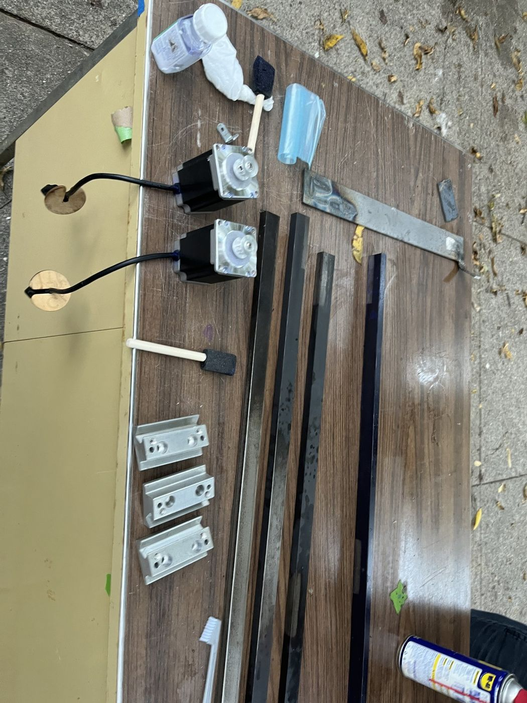
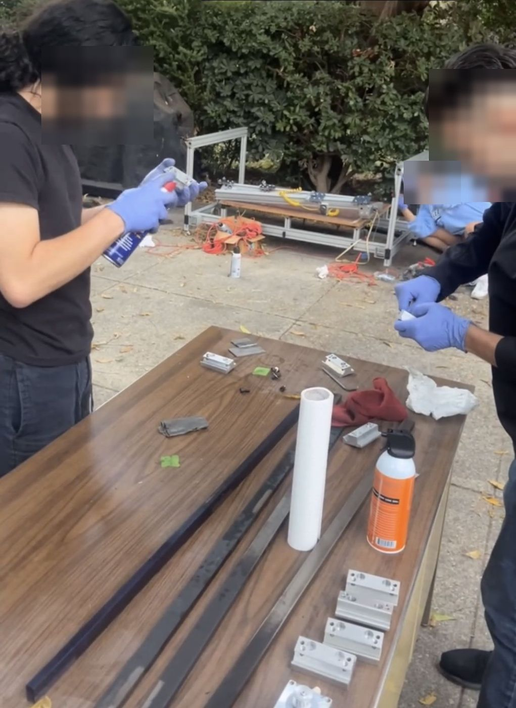
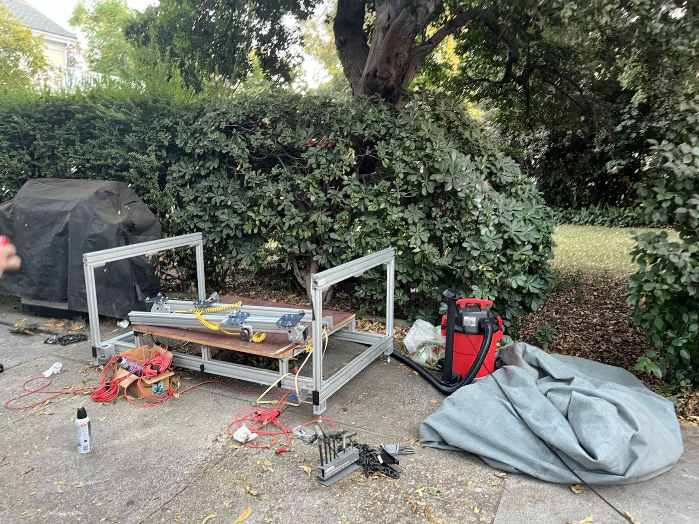
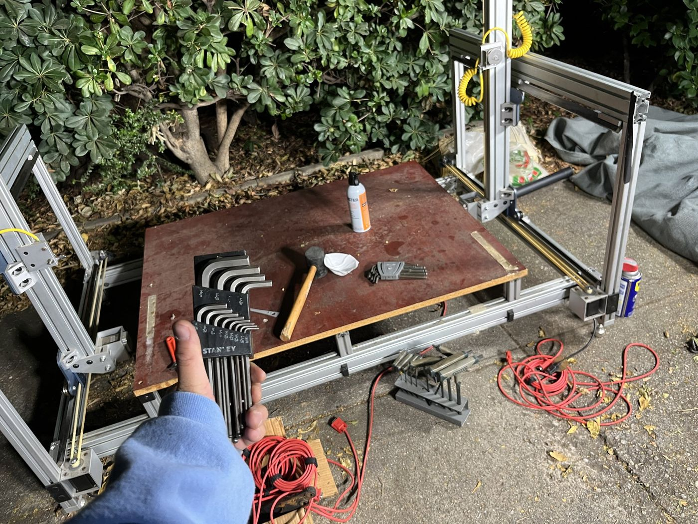

Foam Cutter CNC Refurbishment
Taking the team's badly rusted hot-wire foam cutter apart, treating it, and rebuilding it into a working machine.
CategoryFSAE · Caltech Racing
StatusCompleted
RoleRefurbishment · coordinating volunteers
ToolsHand tools · sanding · silicone

Context
Our team's foam-cutting CNC machine was incredibly rusted, and nobody knew whether it still worked. The software side had been trying to run it with hot-wire foam cutting software and couldn't get it going.
Approach
- Completely dismantled the machine, and got a few teammates to volunteer for the cleanup.
- Sanded the rails down, converted the rust to black oxide, and sealed crevices with silicone to keep rain out.
- Reassembled it. We hadn't documented the teardown, so the rebuild relied on my memory.



Result
Once the software side was sorted out, the machine ran and tested successfully.
What I'd do differently
Photograph and label everything before taking a machine apart. It would have made the rebuild faster and less stressful.